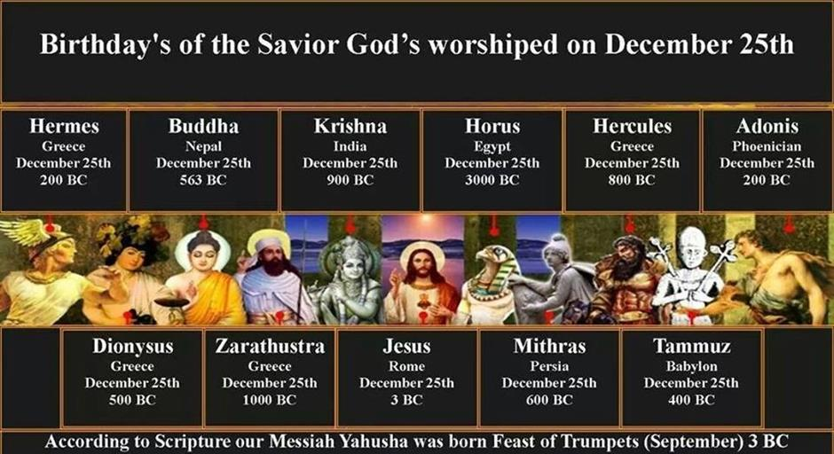
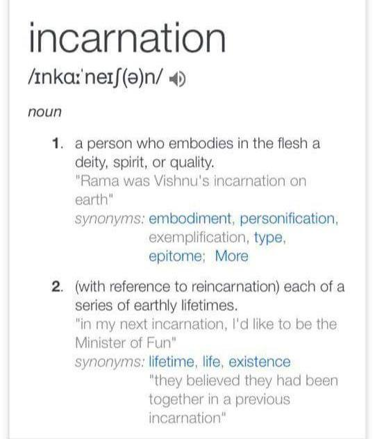
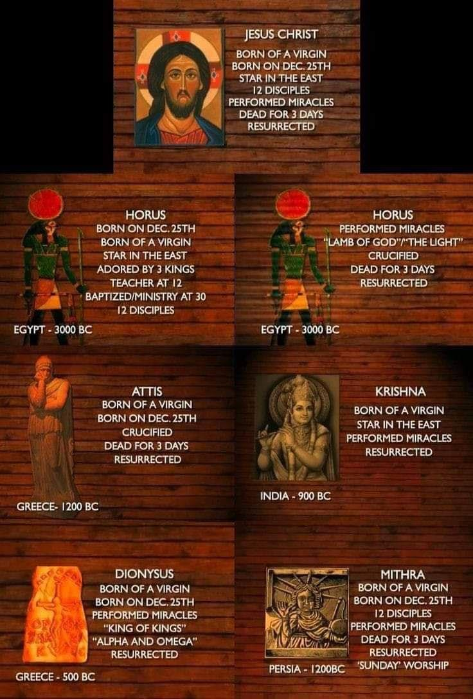

Contents

The belief in Incarnation, which originated in Babylon, has been passed down through generations. Tammuz, regarded as the prototype of the "Christ figure", played a crucial role in establishing the foundation for future demigods as the Babylonian religion spread during the Tower of Babel's development.

Tammuz manifested as a physical representation of The LORD. The term "The LORD" is used as a title to address Ba'al, an ancient deity associated with the Sun. It was believed that Semiramis, also known as Ishtar, was greatly influenced by Ba'al and consequently became pregnant through the divine power of Ba'al or the Sun's rays, resulting in the miraculous birth of a demigod.
Tammuz embodied the god Ba'al in human form on Earth. Ba'al and Tammuz were both married to the same woman. The concept of "incarnation" is introduced concurrently with the emergence of the Trinity.
The Religions of Ancient Greece and Babylonia, by A. H. Sayce. pages 229-230
Many of the theories of Egyptian religion, modified and transformed no doubt, have penetrated into the theology of Christian Europe, and form, as it were, part of the woof in the web of modern religious thought. Christian theology was largely organized and nurtured in the schools of Alexandria, and Alexandria was not only the meeting place of East and West, it was also the place where the decrepit theology of Egypt was revivified by contact with the speculative philosophy of Greece. Perhaps, however, the indebtedness of Christian theological theory to ancient Egyptian dogma is nowhere more striking than in the doctrine of the Trinity. The very terms used of it by Christian theologians meet us again in the inscriptions and papyri of Egypt. Originally the trinity was a triad like those we find in Babylonian mythology. The triad consisted of a divine father, wife, and son. The father became the son and the son the father through all time, and of both alike, the mother was but another form.
According to the Scriptures, it is predicted that during the arrival of the end times and יהוה's selection of chosen individuals from various nations, we will realize that our previous beliefs were, in fact, misleading pagan doctrines.
Yirmeyahu/Jeremiah 1619 יהוה, my strength and my fortress, my refuge in time of distress, to you the nations will come from the ends of the earth and say, "Our ancestors possessed nothing but false gods, worthless idols that did them no good.
Despite the advance warning from the Creator, we neglected to pay attention and have been tricked into believing a lie.
Yirmeyahu/Jeremiah 87My people do not know The Word of יהוה. 8 "How can you say, 'We are wise, And The Torah of יהוה is with us'? But behold, the lying pen of the scribes has made His Word into a lie. 9 "The wise men are put to shame, They are dismayed and caught; Behold, they have rejected the word of יהוה, And what kind of wisdom do they have?
This is most noticeable in the belief in the Incarnation (pre-existence/Trinity, etc. ), which is particularly prominent. Despite constant reminders, יהוה still cautions us about the danger of being deceived by a "false spirit" that disregards His divine nature. This concept is known as "The Spirit of the Antichrist". Because we are unable to detect this dishonest being without assistance, we are given a detailed analysis that helps us recognize the kind of spirit we possess. Is it his genuine spirit or a deceitful one?
Any spiritual being asserting that the birth of the Savior unfolded through the typical process of conception whereby a human mother and father were involved. This is the sound produced by His Set-Apart Spirit, the Ruach Ha Qodesh. Any organization or individual that goes against this conviction and endorses ideas like rebirth, the Trinity, the existence of two separate entities in one, or the notion of a physical manifestation of יהוה, among other concepts. This suggests the contrasting characteristics of the Fake Savior.
Yochanan Aleph/1 John 44Beloved do not believe every spirit but test the spirits to see whether they are from יהוה, because many false prophets have gone out into the world (claiming to be the incarnation of יהוה). 2By this you know the Spirit of יהוה: every spirit that confesses that Messiah יהושע has come in the flesh (Hebrew Sarki "human means only, outside of any Divine influence) is from יהוה; 3 and every spirit that does not confess יהושע has come in the flesh (but says Yahushua is יהוה incarnate) is not from יהוה; this is the spirit of the antichrist (or False Messiah. The False Messiah is an image of a man worshipped above יהוה as God incarnate) …12 No one has seen יהוה at any time (because יהוה IS NOT Yahushua)!
Qolasim/Colossians 115The Son is the (human) image (or proxy) of the invisible יהוה, the firstborn (of the resurrection) over all eternal creation (he is the firstborn of the dead, he did NOT pre-exist).
Yahushua was not eternal or divine nor did he exist before his human birth.
Qolasim/Colossians 118And He is the head of the body, the church; He is the beginning (“The covenant in his name ensures that, just like the resurrection and the end, we all experience a resurrection.“) and firstborn from among the dead (not his human birth nor at creation), so that in all things (in the Kingdom of יהוה) He may have pre-eminence (He holds a higher position in the resurrection order than Avraham, preceding him and being of greater importance in the salvation plan.).
Chazon/Revelation 15Yahushua the Messiah, who is the faithful witness (Emmanuel), the firstborn from the dead, and the ruler of the kings of the earth.
Each pagan human god, originating from Babylon where the notion of Incarnation was first shaped by Ishtar, is rooted in the essence of the False messiah. Each demi-god represents a physical manifestation of divinity - “God in the flesh”. Yahushua was the only one who rejected the act of blasphemy.

Each pagan "Christ" was the embodiment of their “God” and was created based on a distorted interpretation of The Zodiac (a form of worship involving the sun). The ultimate depiction known as "Jesus" represents the anticipated Antichrist or False Messiah as prophesied.
The so-called "Jesus" who has taken human form is the False Messiah. Yahushua, as the initial offspring of the resurrection, holds the eternal role of the High Priest who communicates with יהוה and oversees the Covenant of
Peace. The accomplishment/fulfilment of The Heavenly Scroll and Prophecies.
Incarnation is Blasphemy
Yochanan Bet/2 John 7
Beware of the Antichrist Deceiver
7 For many deceivers have gone out into the world who do not confess יהושע the Messiah as coming in the flesh (but rather confess Jesus is the incarnation of God in the flesh). This (incarnation) is a deceiver and an antichrist. 8 Look to yourselves, that we do not lose those things we worked for, but that we may receive a full reward. 9 Whoever transgresses (The Torah of יהוה) and does not abide in the doctrine of the Messiah (that he was human and that he did not come to abolish The Torah) does not have (the Spirit of) יהוה. He who abides in the doctrine of the Messiah (that he came into being in the flesh and that not one Jot or Tittle of The Torah has been abolished) has both the Father and the Son. 10 If anyone comes to you and does not bring this doctrine (but brings a Trinitarian lie and teaches unrighteousness as truth see Rom. 1:18 that The Torah was abolished), do not receive him into your house nor greet him; 11 for he who greets him shares in his evil deeds (blaspheming the Creator and breaking The Torah)
The doctrine of incarnation goes against clear Scripture by interpreting it falsely in order to create a flawed belief about humanity, which can be seen as a serious offense against the Ruach Ha Qodesh. Blasphemy of the Set- Apart/Holy Spirit
Sha’ul warns us not to elevate the “image of a man” in our hearts above יהוה as God and teach “unrighteousness as truth” or “that The Torah is abolished is true”. Those who replace יהוה with “Jesus” in their hearts will be given over to a depraved mind. The spirit of error is an evil mindset that prevents individuals from gaining any spiritual knowledge and instead fills them with unrighteousness, causing them to disregard יהוה 's laws within their hearts.
Romiyim/Romans 1
Do Not Worship a Man Who Died!
18 For the wrath of יהוה is revealed from heaven against all ungodliness and unrighteousness (breaking His Law) of men who suppress the truth in unrighteousness (teach unrighteousness or The Torah was abolished as truth), 19 because that which is known about יהוה (that He is immortal and invisible Spirit) is evident within them; for יהוה made it evident to them… 21 For even though they knew יהוה, they did not honour Him as Elohim or give thanks, but they became futile in their speculations (that the Messiah was יהוה in the flesh), and their foolish heart was darkened (they do not perceive the Truth in the Scriptures any longer, blinded by incarnation). 22 Professing to be wise (and know יהוה), they became fools (and blasphemed His Immortal Invisible Spirit), 23 and exchanged the glory of the incorruptible יהוה for an image (of the Messiah) of a man who died (the Messiah was a corruptible man who died)… 28 And just as they did not see fit to acknowledge יהוה any longer (that He alone is Elohim, and He is invisible and immortal), יהוה gave them over to a depraved mind, to do those things which are not proper (commit blasphemy and teach יהוה is Yahushua), 29 being filled with all unrighteousness (twisting the truth of the Scriptures into a pagan lie)
Yahushua came in the flesh as a man, fully human in every way, was tempted by evil, was not born perfect, and called himself the son of man 87 times as he was truly the son of his earthly father Yoseph. יהוה, however, declares that He is not a man, He is not ‘the son of man’, He is IMMORTAL and INVISIBLE SPIRIT that cannot be contained in the human form or tempted by evil. יהוה did not lie, and violate His own double vow by coming to Earth as a mortal man who died.
Bemidbar/Numbers 2319 יהוה is not a man, that he should lie (Yahushua was fully human Ib’rim/Hebrews 2:17); neither the son of man (Yahushua was called the son of man in the NT 87 times), that he should repent (Yahushua was Mikvah’d i.e. baptized by Yochanan/John for repentance). Does he speak and then not act? Does he promise and not fulfill?
To claim He came to Earth as a man is calling יהוה a liar! So יהוה spoke... He was not a man, nor the son of man, and has no need to repent. He made a DOUBLE VOW above twice declaring “Does he not speak it (promised never to come to Earth as a man) and not act” and then “Does he promise not to come to Earth as a man then not fulfil it by doing just that via incarnation”! Never, would He come to earth as "God in the flesh". Remember, Yahushua claimed to be a human being 87 times (the son of man) and went to Yochanan to be Mikvah’d for "remission of sin"... there is no chance that יהוה is Yahushua. None. That is a pagan philosophy!
Yochanan Aleph/ 1 John 59Even if we accept human testimony (that יהוה is Yahushua the incarnated demi-god), the testimony of יהוה is greater. For this is the testimony that יהוה has given about His Son (water/born human, blood/Melchizedek, and Spirit/Declared divine by the resurrection). 10Whoever believes that יהושע is the SON of יהוה (through resurrection, not יהוה) has this testimony within him (that Yahushua came into being in the flesh/human in every way); whoever does not believe יהוה (that He is not a man, nor the son of man) has made Him out to be a liar (who broke His vow in Bemidbar/Numbers 23:19), because he has not believed in the testimony יהוה has given about His Son (that Yahushua was born human begotten divine through resurrection). 11And this is that testimony: יהוה has given us eternal life, and this life is in His Son (Yochanan/John 17:3)!
Yochanan/John 173Now this is eternal life: that they know You (יהוה), the only true God, and (come to You through) Yahushua who is the Messiah, whom you have sent (in fulfilment of Your promises as foretold in The Heavenly Scroll and through the prophets to be the Mediator).
Timotiyos Aleph/1 Timothy 25For there is one Elohim (יהוה) and one mediator between יהוה and mankind, the MAN Yahushua the Messiah
Timotiyos Aleph/1 Timothy 3:16 says “Yahushua was revealed in the flesh”. The phrase “in the flesh” means... “natural/physical origin (not Spiritual), born of natural origin ONLY, mere human/natural birth only. The word translated “flesh” is g4561:
g4561 ‘sarki’ - Thayer: 2a) the body of a man 2b) used of natural or physical origin, generation, or relationship 2b1) born of natural generation 4) the flesh, denotes mere human nature, the earthly nature of man apart from divine influence, and therefore prone to sin and opposed to God.
So Yahushua “came in the flesh” and was not a demi-god or “God in the flesh”! He was created human of natural origin, to two human parents outside of any “divine seed” or even “divine influence”...
The Pagan Logos
The doctrine of “incarnation” hinges on the Greek Philosophy behind the Greek word “Logos” as taught by the Greek philosophers Plato and Johanne. The “Christian Church” rose up out of the confines of Hellenistic Rome and adopted these pagan ideas! Then the Greeks translated the scriptures under the inspiration of “The Spirit of the False Messiah”.
We even see a stern warning by those who followed Yahushua in the first century, that the truth was being twisted by the Greeks into a pagan lie:
Qorintiyim/1 Corinthians 120Where is the wise? Where is the scribe? Where is the disputer of this age? Has not יהוה made foolish the wisdom (philosophy) of this world? 21For since, in the wisdom of יהוה, the world (the Roman Empire) through wisdom (philosophy) did not know יהוה, it pleased יהוה through the foolishness of the message preached to save those who believe. 22For Jews request a sign, and Greeks seek after wisdom (through philosophy); 23but we preach the Passover sacrifice of Yahushua, to the Jews a stumbling block and to the Greeks foolishness, 24but to those who are called, both Jews and Greeks, the Messiah is the power of יהוה and the wisdom of יהוה. 25Because the foolishness of יהוה is wiser than men, and the weakness of יהוה (if there is such a thing) is stronger than men.
Kepha Bet/2 Peter 314Therefore, beloved, looking forward to these things, be diligent to be found by Him in peace, without spot and blameless; 15and consider that the longsuffering of our King is salvation—as also our beloved brother Sha’ul, according to the wisdom given to him, has written to you, 16as also in all his letters, speaking in them of these things, in which are some things hard to understand, which untaught and unstable people (Greeks) twist to their own destruction, as they do also the rest of the Scriptures.
Historical records reveal that Hellenism had a significant impact on the world, leading to the emergence of both Christianity and Judaism as we know them today. It is important to acknowledge that the Hebrew texts, the Gospel, and the Hebrew names underwent a process of Hellenization, although we may not fully grasp the extent of its implications. This term implies more than simply the translation of Hebrew texts into Greek and Latin. In essence, the term "Hellenized" refers to the process of incorporating the Greek polytheistic religion into Christian texts to make them more relatable to Greek pagans and effectively integrate them into the universal religion of Christianity.
Hellenism is Greek paganism
It is vital for everyone to have a comprehensive grasp of the events that occurred during this particular period in history. The merging of pagan Hellenism with the Truth of יהוה occurred through syncretism. The text suggests that Hellenism remained unchanged, as the worship of the same gods persisted until 300 CE. Constantine consolidated various pagan beliefs into a single religion known as Christianity.
http://en.wikipedia.org/wiki/Hellenistic_religion
Hellenistic religion - Hellenistic religion is any of the various systems of beliefs and practices of the people who lived under the influence of ancient Greek culture during the Hellenistic period and the Roman Empire (c. 300 BCE to 300 CE). There was much continuity in Hellenistic religion: the Greek gods continued to be worshipped, and the same rites were practiced as before.
http://en.wikipedia.org/wiki/Hellenization
Hellenization - The twentieth century witnessed a lively debate over the extent of Hellenization in the Levant and particularly among the ancient Palestinian Jews that has continued until today. The Judaism of the diaspora was thought to have succumbed thoroughly to its influences. Bultmann thus argued that Christianity arose almost completely within those Hellenistic confines and should be read against that background as opposed to a more traditional (Palestinian) Jewish background
‘Logos’ - a pagan philosophy developed in the 4th Century! Not in The Torah/Prophets
Let's examine in detail the development of the belief that Yahushua is the actual manifestation of the divine message or the "Divine Logos" of יהוה, which was used to support the idea of incarnation. Is Yahushua's role as the "Word" literal, or is he the fulfilment of יהוה's Word from the start? There exists a significant distinction. The concept of Incarnation, which eventually resulted in the incorporation of the pagan Babylonian Trinity through syncretism, did not emerge until 400 years after the life and death of Yahushua. The concept that Yahushua is actually "Logos" and not the fulfilment of יהוה's predetermined plan originated in the 4th Century. This belief emerged from a combination of "tradition and reasoning" heavily influenced by pagan Greek philosophers like Plato.
The Abingdon Dictionary of Living Religions, page 767, tells us:
TRINITY (Ch). The Dogma, formulated authoritatively in fourth century church Councils, that Christians worship one God in three persons (Father, Son, Holy Spirit) and one substance. Under pressure to explain to a hostile Roman world how Christians counted themselves monotheists, Christian apologists (notably Justin Martyr, d. 165) combined Johannine and Stoic-Platonic philosophy of the term “Logos” ("Reason," or "Word") in order to maintain that the Son was both God's own self-expression and a being distinct from him.
To put it succinctly, the passage states that the concept of the Trinity was not justified by referencing the word of יהוה (as it is not possible), but rather through the application of Hellenism and the amalgamation of Johannine, Stoic, and Platonic pagan philosophies in the form of "Logos". The Christians used the term logos, as interpreted by pagan philosophers, to falsely promote a pagan God-savior.
Encyclopedia Britannica, Volume 7, page 449:
LOGOS (Greek:"word, "reason, or plan"), plural logoi, in Greek philosophy and theology, the divine reason implicit in the cosmos, ordering it and giving it form and meaning. Though the concept defined by the term logos is found in Greek, Indian, Egyptian, and Persian philosophical and theological systems, it became particularly significant in Christian writings and doctrines to describe or define the role of Jesus Christ as the principle of God active in the creation and the continuation structuring of the cosmos and in revealing the divine plan of salvation to man. It thus underlies the basic Christian doctrine of the pre-existence of Jesus… The identification of Jesus with the logos was further developed in the early church but more on the basis of Greek philosophical ideas than on Old Testament motifs.
The concept of Logos was based on Greek philosophical ideas not on any prophecy or Tanach/Old Testament “motifs” or Hebrew understanding at all. It is and remains a pagan philosophy of Hellenism.
The religious beliefs and practices of Ancient Greece and Babylonia indicate that the philosophical concepts of the Greeks were formed and evolved in Alexandria, Egypt, drawing inspiration from the non-Christian Babylonian mystical religions. The concepts related to the interpretation of Logos gradually entered modern religious thinking through the philosophical influence of Greece and Egypt. The reason "Logos" or "Word" appears in our English Bibles instead of "The Plan of יהוה" is due to syncretism.
The Religions of Ancient Greece and Babylonia, by A. H. Sayce. pages 229-230
Many of the theories of Egyptian religion, modified and transformed no doubt, have penetrated into the theology of Christian Europe, and form, as it were, part of the woof in the web of modern religious thought. Christian theology was largely organized and nurtured in the schools of Alexandria, and Alexandria was not only the meeting place of East and West, it was also the place where the decrepit theology of Egypt was revivified by contact with the speculative philosophy of Greece. Perhaps, however, the indebtedness of Christian theological theory to ancient Egyptian dogma is nowhere more striking than in the doctrine of the Trinity. The very terms used of it by Christian theologians meet us again in the inscriptions and papyri of Egypt. Originally the trinity was a triad like those we find in Babylonian mythology. The triad consisted of a divine father, wife, and son. The father became the son and the son the father through all time, and of both alike the mother was but another form.
The concept of Logos originated from the pagan MYSTERY religions, and it was later adopted by Greek philosophers. The concept of Incarnation is what defines the essence of the “mystery” that is Mystery Babylon.
The New International Dictionary of New Testament Theology, Volume 3, page 1085
Among the various systems that aim to provide an understanding of the universe through the concept of the logos, the Mystery Religions are included. These cultic societies did not believe that their purpose was to convey scientific knowledge, but instead aimed to share sacred mysteries with their members who sought purification through the repeated performance of sacred rituals. The basis for these cultic behaviours was a revered manuscript. Some of the groups included the followers of Dionysus, the Pythagoreans, and the Orphic Mysteries.
These cults serve as a vehicle for introducing non-Greek ideas, as seen in the Isis-Osiris Mysteries where Osiris, a divine entity formed by Isis, represents the spiritual essence of the entire universe. Likewise, in the realm of the Hermes cult, Hermes shared with his son Tat in the Sacred Text of the cult, the story of how he attained the divine status of logos through the benevolence of God, thus becoming a child of God. Therefore, Hermes introduced order and structure to the world, yet he positioned himself as an intermediary between God and the physical realm, as well as between God and humanity. Alternatively, the concept of logos can manifest itself as the offspring of Hermes, creating a triad consisting of God (Zeus), Son (Hermes), and LOGOS.
A perfect demonstration of how the Pagan Logos philosophy distorts the truth to create a false narrative.
Yochanan/John Chapter 1 is where this pagan philosophy of “Logos” was mistranslated into our English Bibles by uninspired Hellenized translators.
Yochanan/John 11“In the beginning was the Word, and the Word was with God, and the Word was God. 2He was with God in the beginning. 3Through him all things were made; without him, nothing was made that has been made.
4In him was life, and that life was the light of all mankind. 5The light shines in the darkness, and the darkness has not overcome it.”
This text is a clear distortion of the Hebrew way of thinking and communication to advance the Greek notion of pre-existing divine beings called "Christs" by relying on the philosophies of Plato, Johanine, and other scholars.
The term "word" used in these verses is derived from the Greek term logos. The Christians, in their enthusiasm to popularize the pagan concept of the Trinity, incorporated various pagan perspectives into it. However, they choose to overlook the fact that Yochanan, a Hebrew Jew, had no affiliation with pagan Greek philosophy. Additionally, the Gospel of Yochanan/John was not composed with a pagan Greek perspective, as often assumed due to the use of the term logos. The Gospel of Yochanan/John likely originated from a Hebraic perspective, indicating it was likely initially written in Hebrew rather than Greek.
The Wycliffe Bible Encyclopedia, Moody Press, Chicago, IL, Volume 2 pages 1046-1047. Many scholars have argued that the apostle Yochanan/John had this philosophical development (of the pagan LOGOS) in the back of his mind when he wrote the prologue to his Gospel and that he actually tried to impart some of these (pagan) concepts. For a long time many have contended that the background of the fourth Gospel was essentially Hellenistic rather than Hebraic. In dealing with such an assertion we may note that studies in the Dead Sea Scrolls have tended to confirm the traditional conservative position that the cultural orientation of the Gospel of Yochanan/John was Hebraic. Moreover, we must observe that Yochanan/John was a simple fisherman from Palestine. … there is no evidence that he imbibed any Greek pagan philosophical orientation in Yochanan/John Chapter 1. If he intended to be philosophical in the first few verses, he certainly was not anywhere else. We may argue that Yochanan/John used the word "logos" in its ordinary meaning in Greek with the implication of "dabar" in Hebrew meaning "predestined plan".
This source acknowledges that Yochanan/John used this term in its regular sense within the Hebraic perspective. They also acknowledge that Yochanan/John's writings were in Hebrew, not Greek, indicating that the
specific term Yochanan/John used was the Hebrew word "dabar" and not the Greek word "logos. "
The Encyclopedia Judaica acknowledges that the majority of the writings in The New Testament have a Hebraic style. The current Greek versions of The Brit Chadashah/The New Testament that exist today are Greek translations influenced by the Hellenistic culture, and they are derived from earlier Hebrew versions that were likely destroyed after the council of Nicea. Therefore, the term "logos" is not accurately translated; the initial rendition of Yochanan/John Chapter 1 actually employed the term 'dabar' in Hebrew, signifying a 'predestined plan'. Yochanan, also known as John, talked about how Yahushua fulfilled the predetermined plan written in the stars.
The Encyclopedia Judaica, Volume 12, page 1060
THE LANGUAGE OF THE NEW TESTAMENT.
Although the language of the New Testament, in the form that it exists today, is Greek, two earlier influences are still discernible.
(1) THE INFLUENCE OF THE ARAMAIC-HEBREW ORIGINALS. Because most of the authors were Jewish Nazarenes, they spoke, for the most part, Aramaic, and some also mishnaic Hebrew. This influence, which was detectable particularly in the original versions of Mark and Matthew, survives to some degree in their extant Greek versions and in several of the Epistles as well, including James and Jude.
(2) THE SEPTUAGINT. Since this translation was used by many authors, the New Testament contains not only Aramaic words and phrases, which the disciples heard from Jesus and took care to remember out of reverence for their master (e.g. Talitha Kumi (Mark 5:41), Kum, Rabboni, Eli, Eli (Elohi, Elohi) lama sabachthani (Matt. 27:46; Mark 15:24)), but also expressions and phrases which retain their Hebrew flavor although they were transmitted through the Greek translation of the Hebrew Bible.
Dabar vs. Logos
The Gospel of Yochanan/John was originally written in Hebrew and then Hellenized into a Greek-appropriate book to assimilate pagan religions through syncretism. The Hebrew word used in Yochanan/John Chapter 1 was dabar. A Hebrew and Chaldee Lexicon to the Tanach/Old Testament shows us that the Hebrew word dabar refers to יהוה's Plan and His Laws.
A Hebrew and Chaldee Lexicon to the Old Testament, by Julius Furst, page 312
Dabar a) command, precept, law e) decree, plan, proposal
The Interpreter's Dictionary strongly asserts that in the Scriptures, the terms "word," "logos," or "dabar" refer to "יהוה's revealed intentions or predetermined blueprint" for humanity. When discussing the dabar, According to The Interpreter's Dictionary, the term "word" of יהוה is described with strong emphasis.
The Interpreter's Dictionary, Volume 4 pages 870-871
"The word of God" (o logof tou qeou) is used of:
(a) the OT law (cf. Mark 7:13=Matt 15:6, where it is contrasted with the tradition of the Jews);
(b) a particular OT passage (cf. Yochanan/John 10:35, referring to Ps. 82:6);
(c) in a more general sense, God’s revealed will, or his whole plan and purpose for mankind (cf. Luke 11:28; Rom. 9:6; Col. 1:25-27, where it is defined as the "mystery hidden for ages and generations but now manifest to his saints..., which is Christ in you"; Heb. 4:12);
Yochanan, also known as John, wrote under the divine guidance of יהוה, rather than being influenced by the existence of a pre-existing God-saviour. Instead, he focused on conveying the remarkable Plan of יהוה, which is symbolized by the Hebrew term dabar. The Anchor Bible reveals that seven thoughts were on יהוה's mind, providing insight into the Hebraic perspective as depicted in the Talmud. The Plan, which was comprehensive from the start, incorporated the presence of the Savior. This represents the perspective of Yochanan/John Chapter 1, distinct from the pagan concept of "Logos. "
The Anchor Bible, Ephesians 1-3, page 111
IN THE TALMUD tractate Pesachim 54a; cf. Nedarim 39b, seven things, i.e. The Torah, repentance, paradise, Gehinnom, the throne of glory, the heavenly sanctuary, and the messiah are not called pre-created, but pre- conceived in HaShem’s (יהוה's) thoughts.